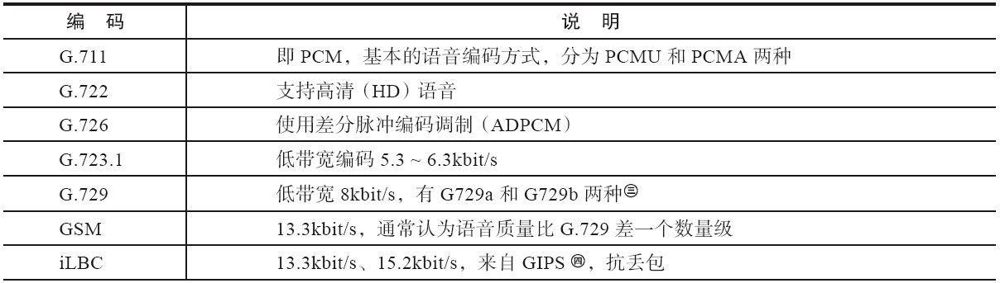
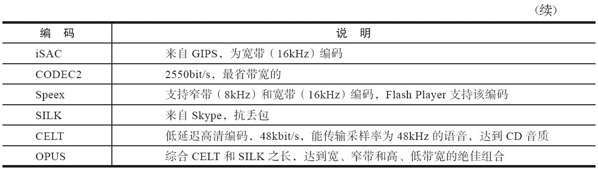
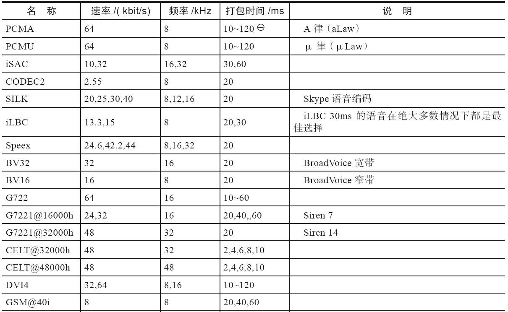
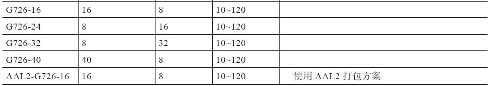
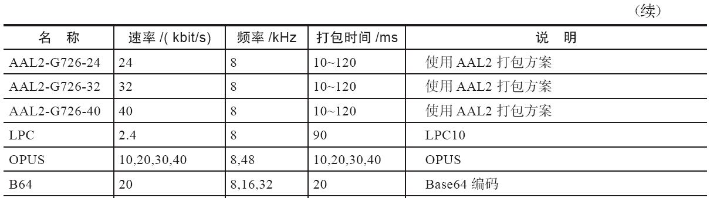
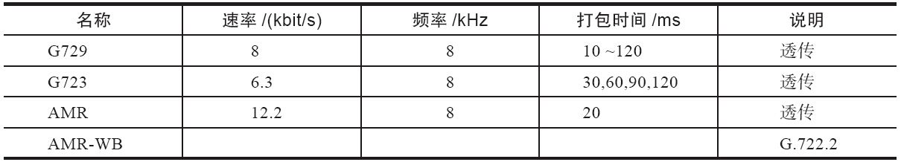
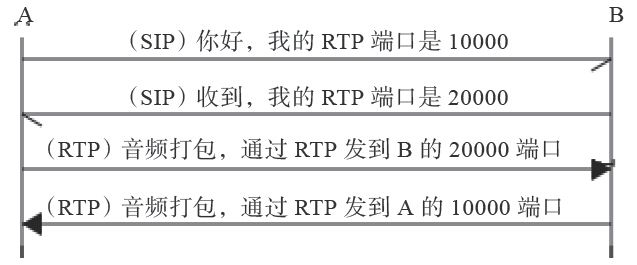

8.1 媒体与媒体处理
常见的媒体有音频、视频、图像（传真）、文本等。为了简单起见，接下来我们主要以音频为例来讲解相关的知识以及在FreeSWITCH中的实现和配置等。
8.1.1 音频编码
从模拟信号变成数字信号的过程称为模数转换（Analog Digital Convert，AD）。AD转换要经过采样、量化、编码三个过程。编码（Code）就是指按照一定的规则将采样所得的信号用一组二进制或者其他进制的数来表示。经过编码后的数据便于在数字网络上传输，到达对端以后，再通过解码（Decode）过程变成原始信号，进而经过数模转换（Digital Analog Convert，DA）再恢复为模拟量，即转换为人们能够感知的信号。
一般来说，编码与解码过程都是成对出现的，所以习惯上人们把它们合起来说，称为编解码（Codec），即Co（de）与Dec（ode）的合成写法，但有时候为了方便，也简称为编码，如我们常说的音频编码或视频编码。
1.PCM编码
我们在1.2.2节讲过PCM。使用PCM方式对原始声音信号进行采样、量化后得到线性编码，然后再进行压缩，这种编码方式就称为PCM编码。PCM的两种压缩方式A律和μ律（alaw和ulaw）对应的编解码名称分别为PCMA和PCMU [1] 。PCM编码是在ITU-T Recommendation G.711标准中定义的，因而又称为G.711 [2] 编码。
经过压缩的PCM编码仍然占用比较高的带宽，因此在带宽比较紧张或比较昂贵的场合（如卫星线路上）又出现了一些更高级的压缩算法，目的都是降低带宽、提高传输效率。
另外，由于VoIP是在IP网上传输的，而大多数的网络没有QoS（Quality of Service）保证，容易产生丢包（Packet Loss）、延迟（Delay）或抖动（Jitter）。它们对于普通数据传输影响不是很严重，但对于实时的语音来说，影响就比较大，有时会引起声音质量的迅速下降，严重时甚至无法分辨。因此，某些好的压缩算法又平衡了这些因素带来的影响，在质量不好的网络上也能得到较好的声音质量。
PCM编码的采样频率为8000Hz，而随着技术的进步及人们对声音质量要求的提高，各种高清（High Definition，HD）编码也纷纷涌现，如G.722等。
如果在网络上传输语音，则要将编码后的语音数据打包。通常使用的打包时间间隔为20ms，即将20ms的音频数据放到一个数据包里传送，也可以理解为每20ms打一个包。如果采样频率是8000Hz，那么1秒就能传输1000ms/20ms=50个包，每个包携带8000/50=160个采样数据。在PCMA或PCMU方式中，每个采样数据占1字节，因此一个20ms的PCM包的数据净荷就是160字节。
2.FreeSWITCH支持的其他语音编码
FreeSWITCH支持非常丰富的语音编码，具体如表8-1所示。
表8-1 FreeSWITCH支持的语音编码


与其他压缩算法不同的是，G.729携带的不是真正语音数据的压缩结果，而是使用CS-ACELP预测模型得到的声音码表。CS-ACELP的全称是Conjugate-Structure Algebraic-Codec-Excited Liner，它利用数学模型模拟人类的各种发声方式，可以建立声音码表，用发送对应的声音代码代替实际的声音采样。对端收到后再根据这些声音代码合成语音。
Global IP Sound，后改为Global IP Solutions，在语音编解码方面颇有建树，它们的解决方案在抗丢包及回声消除方面做得特别好，广泛应用于我们所熟知的产品，如Skype及QQ。2010年被Google收购，后来开源了iSAC。
在FreeSWITCH中，编码名称的格式为“名称@xxh@yyi”。其中h代表Hz，即采样频率；i则代表ptime，即打包间隔；xx和yy分别代表实际的数值，如speex@16000h@20i表示16000Hz、20ms的Speex编码。表8-2列举了FreeSWITCH中各种编码的一些详细参数。
表8-2 FreeSWITCH支持的语音参数



以10ms为间隔，即10，20，30，…，120，下同。
表8-3中所列的编码，由于专利原因，只能透传。其中，G729编码在FreeSWITCH中Linux平台上有Licence解决方案，购买一路需要10美元，其中包含一个编码器和一个解码器。
表8-3 透传的语音编码

另外，关于这些编码的比较，可以参见http://en.wikipedia.org/wiki/Comparison_of_audio_codecs。
3.FreeSWITCH中与编码相关的主要命令
如果要查看FreeSWITCH支持的编码类型，可以在控制台上使用show codec命令，下面是该命令在笔者电脑上的输出结果（有删节）。
freeswitch> show codec
codec,ADPCM (IMA),mod_spandsp
codec,AMR,mod_amr
codec,G.711 alaw,CORE_PCM_MODULE
codec,G.711 ulaw,CORE_PCM_MODULE
codec,G.722,mod_spandsp
codec,G.723.1 6.3k,mod_g723_1
codec,G.726 16k,mod_spandsp
codec,G.729,mod_g729
codec,H.264 Video (passthru),mod_h26x
codec,VP8 Video (passthru),mod_vp8
上述结果中，每一行代表某一个编码，都标明了相关的编码名称及参数（以逗号隔开的第2列）以及具体实现的模块（第3列）。我们可以看到，G.711编码（A律和μ律）都是在核心模块（CORE_PCM_MODULE）中实现的。关于具体的实现代码，我们在第18章讲源代码阅读的时候还会讲到。
另外，在FreeSWITCH启动的时候，或者你使用reload来重新加载某个编解码模块的时候，可以看到控制台上有类似如下的输出（下面是重新加载mod_spandsp时的输出，该模块提供了很多语音编码，有删节）。
[NOTICE] Adding Codec DVI4 6 ADPCM (IMA) 16000hz 40ms 64000bps
[NOTICE] Adding Codec DVI4 6 ADPCM (IMA) 16000hz 50ms 64000bps
[NOTICE] Adding Codec DVI4 6 ADPCM (IMA) 16000hz 60ms 64000bps
[NOTICE] Adding Codec DVI4 5 ADPCM (IMA) 8000hz 10ms 32000bps
[NOTICE] Adding Codec DVI4 5 ADPCM (IMA) 8000hz 20ms 32000bps
[NOTICE] Adding Codec DVI4 5 ADPCM (IMA) 8000hz 30ms 32000bps
[NOTICE] Adding Codec G726-16 124 G.726 16k 8000hz 10ms 16000bps
[NOTICE] Adding Codec G726-16 124 G.726 16k 8000hz 20ms 16000bps
[NOTICE] Adding Codec G726-16 124 G.726 16k 8000hz 30ms 16000bps
....
上述结果中，上面每一行都代表增加了一种编码。它们的意义一目了然，因此，在这里就不多解释了。
在实践中，当你不清楚某种编码所提供的各种参数时，可以尝试重新加载所属模块。比如SILK编码属于mod_silk模块，则可以使用reload mod_silk实现，示例如下：
freeswitch> reload mod_silk
[NOTICE] Adding Codec SILK 119 SILK 16000hz 20ms 30000bps
[NOTICE] Adding Codec SILK 118 SILK 12000hz 20ms 25000bps
[NOTICE] Adding Codec SILK 117 SILK 8000hz 20ms 20000bps
iLBC编码也是由独立的模块提供的，重新加载的命令和输出如下：
freeswitch> reload mod_ilbc
[NOTICE] Adding Codec iLBC 97 iLBC 8000hz 30ms 13330bps
[NOTICE] Adding Codec iLBC 98 iLBC 8000hz 20ms 15200bps
音频编码最基本的两个技术参数就是采样频率和打包周期。采样频率越高，声音就越清晰，保留的细节就越多，当然它会占用更大的带宽。对于普通“人声”通话来讲，8000Hz就够了，但对于高品质的音乐来讲，就需要更高的采样率才能保证“悦耳”，比如我们通常说的CD音质的声音使用的就是44.1kHz的采样率。打包周期跟传输有关，打包周期超短，延迟越小，相对而言传输开销就会越多，因而需要更大的带宽；打包周期超长，带来的延迟就越大，如果传输过程中有丢包，对语音质量的影响也就越大。大部分编码都支持多种打包周期，最常见的是20ms，iLBC、G.723等默认使用30ms，更长的打包周期如60~120ms，通常用于卫星链路等高延迟、低带宽的场合。
注意，在FreeSWITCH中，有些编码不是默认安装的。如果要使用这些编码，需要自己编译，如在源代码目录下可执行以下命令来安装相应的编码（中文注释为笔者所加）：
# make mod_celt-install #
安装CELT
编码
# make mod_silk-install #
安装SILK
编码
# make mod_isac-install #
安装iSAC
编码
# make mod_opus-install #
安装OPUS
编码
# make mod_codec2-install #
安装CODEC2
编码
8.1.2 媒体工作机理和相关配置
为了帮助大家更好地理解媒体，下面我们简单介绍一下媒体的工作机理和相关的配置。
1.工作机理
在第7章中，我们只讨论了SIP的呼叫建立和释放流程，而没有考虑媒体的情况。实际上，在基于SIP的通信中，媒体数据是在RTP流中传输的。
以PCM音频数据为例，我们上面已经讲过，如果打包周期是20ms，则每个音频包得到160字节的数据，在这些数据前面加上12字节的RTP包头，就成为了一个RTP包。RTP包头中携带了音频的编码类型及时间戳等数据，以便于对方收到后进行解码回放及同步等。
RTP包使用与SIP不同的UDP端口传送，因而在实际传输前需要先通过SIP信令与对方“协商”好该往哪个端口传送，一个高度简化的SIP/RTP交互流程示意图如图8-1所示。从图中我们可以看到，A和B首先通过SIP信令“协商”好双方将要使用的RTP端口号（当然还有双方的IP地址，我们省略了），然后双方互相向对方发送RTP媒体流。

图8-1 简化的SIP/RTP交互流程示意图
SIP可使用TCP或UDP承载，但RTP数据一般只使用UDP承载。更详细的协商过程我们稍后讨论，下面先来看一下FreeSWITCH中与媒体相关的配置。
2.相关配置
在默认的配置中，SIP Profile支持的媒体列表是在vars.xml文件中配置的，如：
<X-PRE-PROCESS cmd="set" data="global_codec_prefs=G722,PCMU,PCMA,GSM"/>
<X-PRE-PROCESS cmd="set" data="outbound_codec_prefs=PCMU,PCMA,GSM"/>
如果要增加其他编码的支持（如G729），可以将上述配置项改为：
<X-PRE-PROCESS cmd="set" data="global_codec_prefs=G722,PCMU,PCMA,GSM,G729"/>
<X-PRE-PROCESS cmd="set" data="outbound_codec_prefs=PCMU,PCMA,GSM,G729"/>
然后需要重启FreeSWITCH以使设置生效 [3] 。
如果在学习过程中需要频繁做实验，不妨直接修改Profile配置中的相关项，如在internal.xml中，将下面的行：
<param name="inbound-codec-prefs" value="$${global_codec_prefs}"/>
改为：
<param name="inbound-codec-prefs" value="PCMU,PCMA,G729,iLBC,H264,VP8"/>
然后只需在FreeSWITCH控制台上或fs_cli中执行如下命令使刚才的配置生效：
freeswitch> sofia profile internal rescan
以下命令可以列出当前与Profile相关的配置情况，如（有删节）：
freeswitch> sofia status profile internal
====================================================================
Name internal
Dialplan XML
Context public
RTP-IP 192.168.1.102
SIP-IP 192.168.1.102
URL sip:mod_sofia@192.168.1.102:5060
BIND-URL sip:mod_sofia@192.168.1.102:5060
CODECS IN PCMU,PCMA,G729,iLBC,H264,VP8
CODECS OUT PCMU,PCMA,H264,VP8
……
其中，CODECS IN、CODECS OUT行显示了呼入、呼出的编码设置。
[1] 这些名字用于在SDP中标志RTP中传输的媒体的类型，参见：http://en.wikipedia.org/wiki/RTP_audio_video_profile。
[2] 参见http://en.wikipedia.org/wiki/G.711。
[3] 在UNIX类平台上，也可以给FreeSWITCH发送HUP信号让FreeSWITCH重新解析这些XML中的全局变量。首先找到FreeSWITCH的Pid，然后kill-HUP<Pid>，最后在FreeSWITCH中执行sofia profile internal rescan。